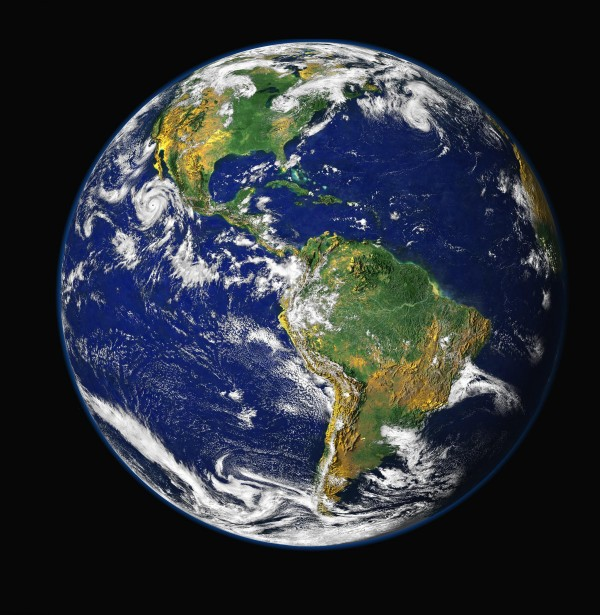

Earth's axis of rotation is tilted with respect to its orbital plane, producing seasons on Earth. The gravitational interaction between Earth and the Moon causes tides, stabilizes Earth's orientation on its axis, and gradually slows its rotation. Earth is the densest planet in the Solar System and the largest and most massive of the four rocky planets.
Earth's lithosphere is divided into several rigid tectonic plates that migrate across the surface over many millions of years. About 71% of Earth's surface is covered with water, mostly by oceans. The remaining 29% is land consisting of continents and islands that together contain many lakes, rivers and other sources of water that contribute to the hydrosphere. The majority of Earth's polar regions are covered in ice, including the Antarctic ice sheet and the sea ice of the Arctic ice pack. Earth's interior remains active with a solid iron inner core, a liquid outer core that generates the Earth's magnetic field and a convecting mantle that drives plate tectonics.